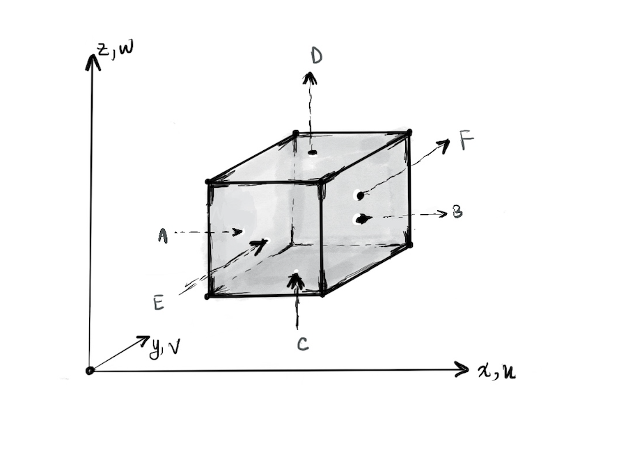
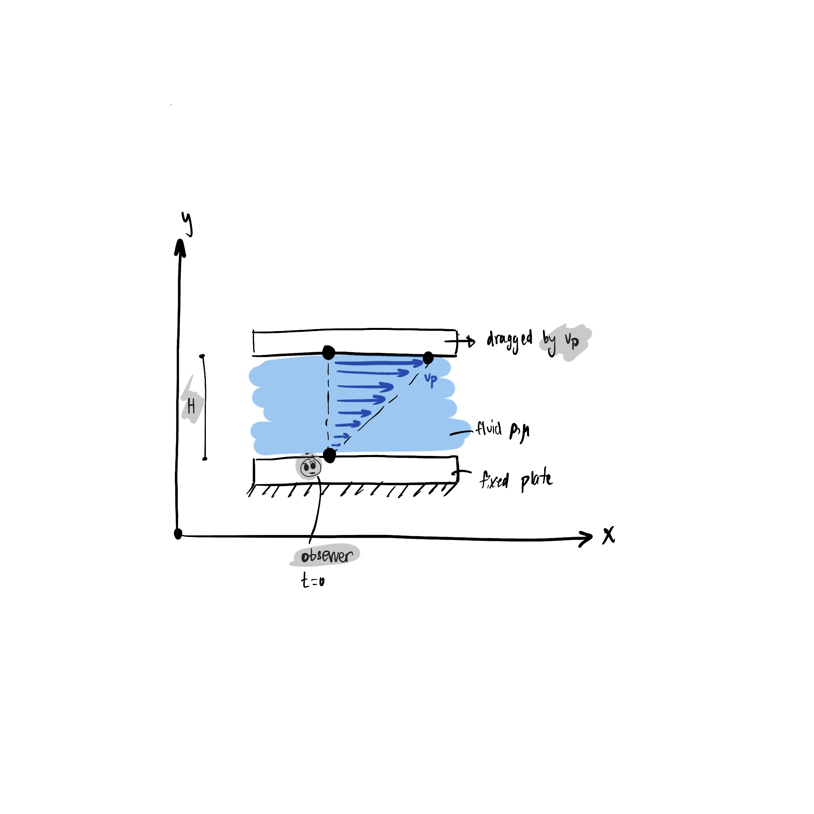

Navier-Stokes Equations
In a continuum, macroscopic properties are represented as fields, allowing the laws of conservation of mass, momentum, and energy to be expressed through partial differential equations.
For Naiver-Stokes derivation, we need coupled system so we are able to construct conservation of mass and then expressing momentum equations in PDE.
The Navier-Stokes equations describe the motion of fluid substances and are derived from the conservation laws of mass, momentum, and energy. These equations are expressed as a system of coupled partial differential equations (PDEs). The conservation of mass is typically represented by the continuity equation, and the conservation of momentum is represented by the Navier-Stokes equations themselves.
Conservation of Mass
From the principle of conservation of mass and the notion of control volume (CV) which means that the volume chosen is fixed as there is fluid flow, we have:
\[
\text{Temporal change in mass } = \sum \phi_\text{Mass flowing into CV} - \sum \phi_\text{Mass flowing out CV}
\]
Knowing the mass flux equation is:
\[
\phi_{Mass} = \rho (\vec{v} \cdot \vec{n})
\]
Using (1),(2) and taking the flow of faces A and B:

\[
\begin{aligned}
&\phi_\text{Mass of A} = \rho u dy dz \\
&\phi_\text{Mass of B} = (\rho u + \frac{\partial \rho u}{\partial x} dx) dy dz
\end{aligned}
\]
Considering all the surfaces:
\[
\begin{aligned}
&\frac{\partial}{\partial t}m = \frac{\partial}{\partial t} \rho dx dy dz = (\rho u - (\rho u + \frac{\partial \rho u}{\partial x} dx))dy dz + (\rho v - (\rho v + \frac{\partial \rho v}{\partial y} dy)) dx dz + (\rho w - (\rho w + \frac{\partial \rho w}{\partial z} dz))dx dy \\
&\text{Crossing out the term \( dxdydz\) both sides:}\\
&\frac{\partial \rho}{\partial t} = -\frac{\partial (\rho u)}{\partial x} - \frac{\partial (\rho v)}{\partial y} - \frac{\partial (\rho w)}{\partial z} \\
&\frac{\partial \rho}{\partial t} + \nabla \cdot (\rho \vec{v}) = 0
\end{aligned}
\]
For incompressible fluid meaning the fluid has constant density:
\[
\begin{aligned}
&\frac{\partial }{\partial t}\rho + \nabla \cdot (\rho \vec{v}) = 0 \\
&\nabla \cdot \vec{v} = 0 \\
&\frac{\partial u}{\partial x} + \frac{\partial v}{\partial y} + \frac{\partial w}{\partial z} = 0
\end{aligned}
\]
Due to the specification of incompressibility and constant density, reducing the equation of mass conservation to the condition of incompressibility:
\[
\frac{\partial u}{\partial x}+\frac{\partial v}{\partial y}+\frac{\partial w}{\partial z}=0
\]
Conservation of Momentum
From Newton's Second Law:
\[
\text{Temporal change of momentum CV } = \phi_\text{Momentum flowing into CV} - \phi_\text{Momentum flowing out CV} + \sum F_\text{acting on CV}
\]
Momentum flux equation:
\[
\phi_{Moment} = \rho \vec{v} ( \vec{v}\cdot \vec{n})
\]
Applying same logic as (4), get the variation of momentum:
\begin{equation}
\begin{aligned}
\phi_\text{Momentum in} - \phi_\text{Momentum out} &= (\rho\vec{v}u - (\rho\vec{v}u + \frac{\partial (\rho\vec{v}u)}{\partial x} dx))dy dz + (\rho\vec{v} v - (\rho\vec{v} v + \frac{\partial (\rho\vec{v} v)}{\partial y} dy))dx dz + (\rho\vec{v} w - (\rho\vec{v} w + \frac{\partial (\rho\vec{v} w)}{\partial z} dz))dx dy \\
& = - [\frac{\partial }{\partial x}(\rho\vec{v} u)+ \frac{\partial }{\partial y}(\rho\vec{v} v)+ \frac{\partial }{\partial z}(\rho\vec{v} w)]dxdydz \\
&\text{Apply chain rule, and apply assumptions of incompressibility }\\
& = -\rho [(u\frac{\partial \vec{v}}{\partial x} + v\frac{\partial \vec{v}}{\partial y} + w\frac{\partial \vec{v}}{\partial z})+ \vec{v} (\frac{\partial u}{\partial x} +\frac{\partial v}{\partial y}+\frac{\partial w}{\partial z})]dx dy dz
\end{aligned}
\end{equation}
Using (6) , the equation results in:
\begin{equation}
\phi_\text{Momentum in} - \phi_\text{Momentum out}= -\rho (u\frac{\partial \vec{v}}{\partial x} + v\frac{\partial \vec{v}}{\partial y} + w\frac{\partial \vec{v}}{\partial z})dx dy dz
\label{eq: vector form of inflow-outflow}
\end{equation}
Rewrite (10) in component form:
\begin{equation}
\begin{aligned}
\text{x- component: }& -\rho (u \frac{\partial u}{\partial x}+ v \frac{\partial u}{\partial y} + w \frac{\partial u}{\partial z} )dx dy dz \\
\text{y-component: }& -\rho (u \frac{\partial v}{\partial x}+ v \frac{\partial v}{\partial y} + w \frac{\partial v}{\partial z} )dx dy dz \\
\text{z-component: }& -\rho (u \frac{\partial w}{\partial x}+ v \frac{\partial w}{\partial y} + w \frac{\partial w}{\partial z} )dx dy dz
\end{aligned}
\end{equation}
Adding the forces acting on the CV:
-
Gravitational force:
\[
\rho \vec{g} \, dxdydz
\]
-
Shear force: Tensor Quantity of Shear \(\tau\):
\[
\tau = \begin{bmatrix}
\tau_{xx} & \tau_{xy} & \tau_{xz} \\
\tau_{yx} & \tau_{yy} & \tau_{yz} \\
\tau_{zx} & \tau_{zy} & \tau_{zz}
\end{bmatrix}
\]
The temporal change of momentum (7) becomes:
\begin{equation}
\begin{aligned}
\text{x- component: }& =\rho \frac{\partial u}{\partial t} dx dy dz = -\rho (u \frac{\partial u}{\partial x}+ v \frac{\partial u}{\partial y} + w \frac{\partial u}{\partial z})dx dy dz + \rho g_x dx dy dz + (\frac{\partial \tau_{xx}}{\partial x} + \frac{\partial \tau_{xy}}{\partial y} + \frac{\partial \tau_{xz}}{\partial z})dx dy dz \\
&= \rho (\frac{\partial u}{\partial t}+ u \frac{\partial u}{\partial x}+ v \frac{\partial u}{\partial y} + w \frac{\partial u}{\partial z}) = \rho g_x +\frac{\partial \tau_{xx}}{\partial x} + \frac{\partial \tau_{xy}}{\partial y} + \frac{\partial \tau_{xz}}{\partial z} \\
\text{y- component: }& = \rho(\frac{\partial v}{\partial t} + u \frac{\partial v}{\partial x} + v \frac{\partial v}{\partial y} + w \frac{\partial v}{\partial z}) = \rho g_y +\frac{\partial \tau_{yx}}{\partial x} + \frac{\partial \tau_{yy}}{\partial y} + \frac{\partial \tau_{yz}}{\partial z} \\
\text{z- component: }& = \rho(\frac{\partial w}{\partial t} + u \frac{\partial w}{\partial x} + v \frac{\partial w}{\partial y} + w \frac{\partial w}{\partial z}) = \rho g_z +\frac{\partial \tau_{zx}}{\partial x} + \frac{\partial \tau_{zy}}{\partial y} + \frac{\partial \tau_{zz}}{\partial z}
\end{aligned}
\label{eq: differentiate tensor}
\end{equation}
Viscosity
It is a measure of the resistance of a fluid to deformation under shear stress. And i will define it in another way in a bit.
Consider the following figure:

Analyzing the behavior of fluids 'pull' of each others:
the velocity of the very bottom one, \(v_x(y=0) =0\), and the very top, \(v_x(y=H) =H\). These two conditions are called no-slip condition. Due to the fixed plate and the other movable one we have shear stress as a result of deformation force, which is linearly related to velocity gradient (slope):
\[
\tau_{yx} = \mu \frac{d v_x}{dy}
\]
where this is Newtonian law of viscousity, \(\mu\) is the coefficient of viscosity and \(\frac{d v_x}{dy}\) is velocity gradient slope.
If a fluid is called Newtonian, then \(\mu = cst\), and Non-Newtonian or having Shear-thinning deformation, when \(\mu = f(\frac{d v_x}{dy})\).
Thus, we can see viscosity as the interaction between layers of fluid that can transfer momentum between them. Now let's relate stress and deformation.
For Newtonian, istropic fluid:
\begin{equation}
\begin{aligned}
\tau_{xx} &= -p - (k+\frac{2}{3} \mu) (\nabla \cdot \vec{v})+2 \mu \frac{\partial u}{\partial x}\\
\tau_{yy} &= -p - (k+\frac{2}{3} \mu) (\nabla \cdot \vec{v})+2 \mu \frac{\partial v}{\partial y}\\
\tau_{zz} &= -p - (k+\frac{2}{3} \mu) (\nabla \cdot \vec{v})+2 \mu \frac{\partial w}{\partial z}
\end{aligned}
\end{equation}
These are the normal stress components where \(p\) is the pressure, \(k\) is the bulk modulus since this term is "bulk-viscosity" which is the mechanical pressure related to thermodynamic pressure, and \(\mu\) is the coefficient of viscosity.
Note: for incompressible fluid which is our case, disregard "bulk-viscosity" term, hence we have the following:
\begin{equation}
\begin{aligned}
\tau_{xy} = \tau_{yx} &= \mu (\frac{\partial u}{\partial y} + \frac{\partial v}{\partial x})\\
\tau_{xz} = \tau_{zx} &= \mu (\frac{\partial u}{\partial z} + \frac{\partial w}{\partial x})\\
\tau_{yz} = \tau_{zy} &= \mu (\frac{\partial v}{\partial z} + \frac{\partial w}{\partial y})
\end{aligned}
\end{equation}
Now, we need to differentiate the shear tensor as required in the equations (14) i.e,
\[
\begin{aligned}
\frac{\partial \tau_{xx}}{\partial x} &= 2\mu \frac{\partial^2 u }{\partial x^2} - \frac{\partial p}{\partial x} \\
\frac{\partial \tau_{yx}}{\partial y} &= \mu \frac{\partial ^2 u}{\partial y^2} \\
\frac{\partial \tau_{zx}}{\partial z} &= \mu \frac{\partial ^2 u}{\partial z^2}
\end{aligned}\]
and so on.
After plugging (18) in the x-component (11):
\[\rho (\frac{\partial u}{\partial t} + u\frac{\partial u}{\partial x} + v \frac{\partial u}{\partial y} + w \frac{\partial u}{\partial z})= \rho g_x + \frac{\partial \tau_{xx}}{\partial x} + \frac{\partial \tau_{yx}}{\partial y} + \frac{\partial \tau_{zy}}{\partial z}\]
Evaluating for the rest of components, where we can define new notion called "Substantian/ Material Derivative" which is derivative following the motion of a fluid element, as :
\[\frac{D \odot }{Dt} = \frac{\partial \odot}{\partial t} + u \frac{\partial \odot}{\partial x} + v \frac{\partial \odot}{\partial y} + w \frac{\partial \odot}{\partial z}\]
Insight to the Material derivative: we have local changes with respect to time, meaning local variations, in addition to how fast it is moving where we have speed and direction (spatial variation) in the second term.
We get the momentum equations in the form of Navier-Stokes equations.
\begin{equation}
\begin{aligned}
\rho \frac{Du}{Dt} &= \rho g_x - \frac{\partial p}{\partial x} + \mu (\frac{\partial^2 u }{\partial x^2 } + \frac{\partial^2 u}{\partial y^2} + \frac{\partial^2 u}{\partial z^2})\\
\rho \frac{Dv}{Dt} &= \rho g_y - \frac{\partial p}{\partial y} + \mu (\frac{\partial^2 v }{\partial x^2 } + \frac{\partial^2 v}{\partial y^2} + \frac{\partial^2 v}{\partial z^2})\\
\rho \frac{Dw}{Dt} &= \rho g_z - \frac{\partial p}{\partial z} + \mu (\frac{\partial^2 w }{\partial x^2 } + \frac{\partial^2 w}{\partial y^2} + \frac{\partial^2 w}{\partial z^2})
\end{aligned}
\end{equation}
One can write Navier-Stokes equations as vector form:
\begin{equation}
\rho \frac{D \vec{v}}{D t} = \rho \vec{g} - \vec{\nabla}p + \mu \nabla^2 \vec{v}
\end{equation}
Non-dimensionalization
The scaling of the variables is as follows:
\begin{equation}
\begin{aligned}
& \vec{v}^* = \frac{\vec{v}}{V}\\
& \vec{\nabla}^* = L \vec{\nabla}\\
& {\nabla^{*}}^2 =L^2 \nabla^2\\
& p^* = \frac{p}{\mu \frac{V}{L}}
\end{aligned}
\end{equation}
Plug in these scalings in the vector-form of the equation (22) and assume we have steady state meaning that \(\frac{D\vec{v}}{Dt} = \vec{v} \cdot \vec{\nabla} \vec{v}\):
\begin{equation}
\begin{aligned}
& \rho (\vec{v} \cdot \vec{\nabla} \vec{v}) = -\nabla p + \mu \nabla^2 \vec{v}\\
& \rho(V \vec{v}^* \frac{1}{L} \vec{\nabla}^* V \vec{v}^*) = -\frac{1}{L}\nabla^* \mu \frac{V}{L} p^*+\mu \frac{1}{L^2}{\nabla^*}^2 V\vec{v}\\
&\text{multiply the terms on both sides by } \frac{L^2}{\rho V^2}\\
& \frac{\rho L V}{\mu} (\vec{v}^* \nabla^* \vec{v}^*) = -\nabla^* p^* + {\nabla^*}^2 \vec{v}^*
\end{aligned}
\end{equation}
We have the Reynold's number: \[Re = \frac{\rho V L }{\mu}\] which can be read as inertial forces by viscous forces. So if we have \(Re << 1\) meaning the viscous terms dominate so the fluid is laminar, and if \(Re >> 1\) meaning the inertial terms dominate so the fluid is turbulent.
The final form of the Navier-Stokes equations in non-dimensional form is:
\begin{equation}
R_e(\vec{v}^* \nabla^* \vec{v}^*) = -\nabla^* p^* + {\nabla^*}^2 \vec{v}^*
\end{equation}